Unity 2-7 Stealth秘密行动
Abstract; 向量运算；Animation动画；Navigation寻路系统；Mecanim动画系统
任务1&2&3：游戏介绍 && 创建工程和游戏场景介绍 && 创建游戏环境
逃生游戏，过关条件为拿到钥匙并从电梯处逃脱
被敌人/ 摄像头/ 触碰红外线 -- 触发警报
红外线可以手动断电
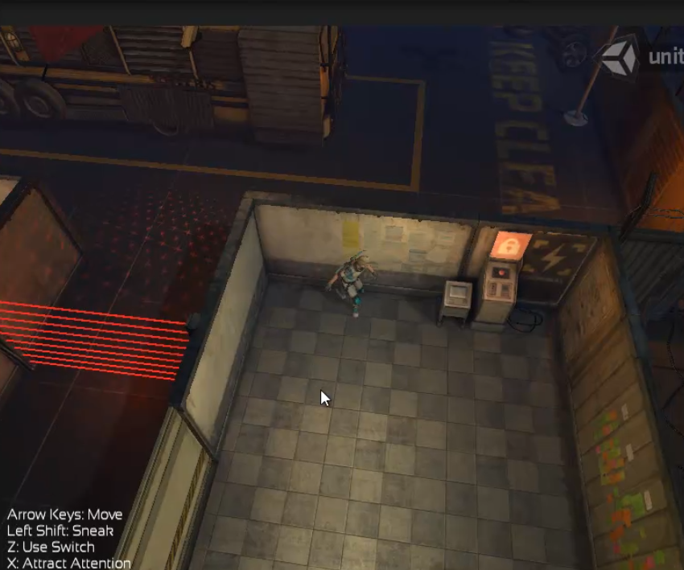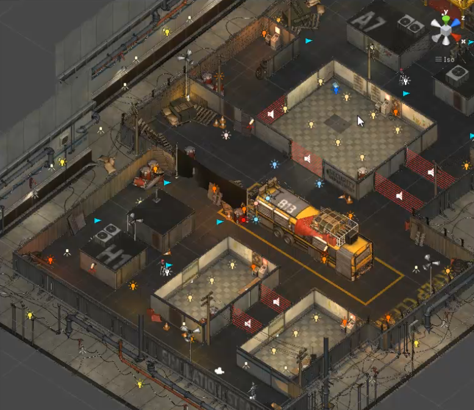
右上图场景是美工创建好的
Import package->Custom package: StealthAssets.unitypackage
资源介绍：
Animation, Audio, Fonts, Gizmos, Materials, Models, Shaders, Textures
Animation中的.fdx文件是从3d软件中导出的动画模型
humanoid动画可以应用在任意人形模型上
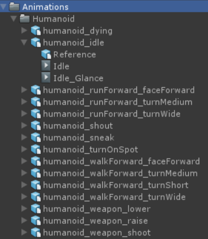
Audio：声音文件
Fonts：字体
Gizmos：waypoint的图标，用于敌人寻路的AI，用图标表示路径
Materials：材质
Models：模型（环境模型、物品模型等）
里面有一个文件夹Collision Meshes，存放collision的mesh，用于碰撞检测
比如prop_cctvCam_collision: 一个椎体，用来检测player是否进入了摄像头视野
Shaders：更好的效果
Textures：模型的贴图
创建游戏环境：
1. 新建文件夹Scenes，保存场景Stealth
2. 创建空物体env，用于存放有关环境的物体
3. 将Models->env_stealth_static拖入场景(env下)
Reset Transform
4. 给env_stealth_static添加碰撞器
添加Mesh Collider
在Mesh属性中指定简化的Models->Collision Meshes:
env_stealth_collision->env_stealth_collision_001
在scene模式下，可以看到的绿色网格就是刚才的collision
创建battleBus：
发现中间一块有一个突起的mesh collider，而没有物体存在
由于在env_stealth_static中没有放入位于地图中间的小车
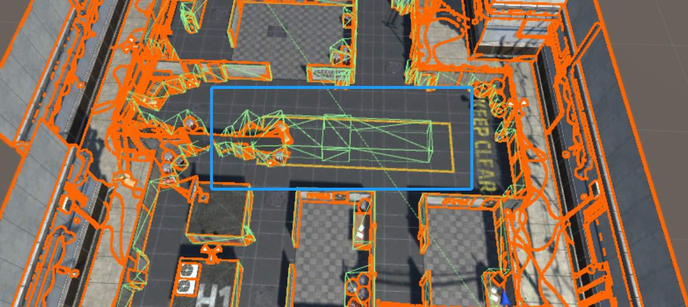
因此手动添加prop_battleBus到地图内 (作为env子物体)，并旋转到车头朝向杂物，位置与Mesh Collider重合即可
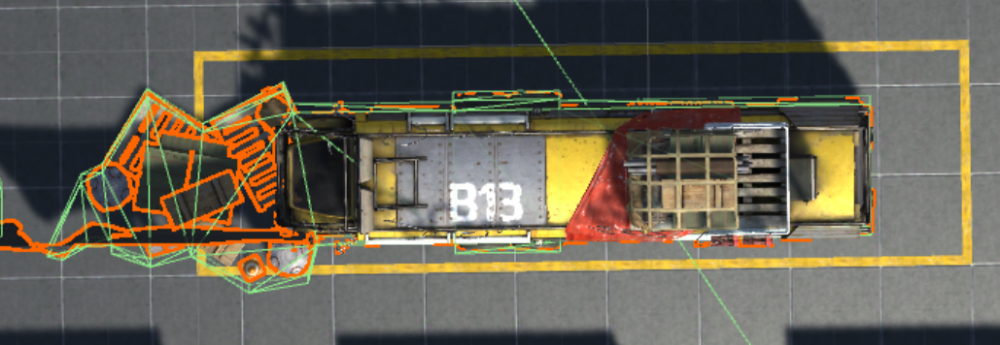
任务4：添加环境灯光
给环境添加环境灯光：
在最外层创建空物体light (位置归零)，用于存放所有灯光
在light中创建Directional Light，颜色为暗一点的灰色，Intensity调小(0.1)
Main Camera背景颜色调为黑色，Clear Flags调为Solid color
给房间添加灯光：
在light中创建Point Light，颜色为暗橘黄色，
一个房间添加一个，在四周的墙上或过于阴暗的地方放置若干
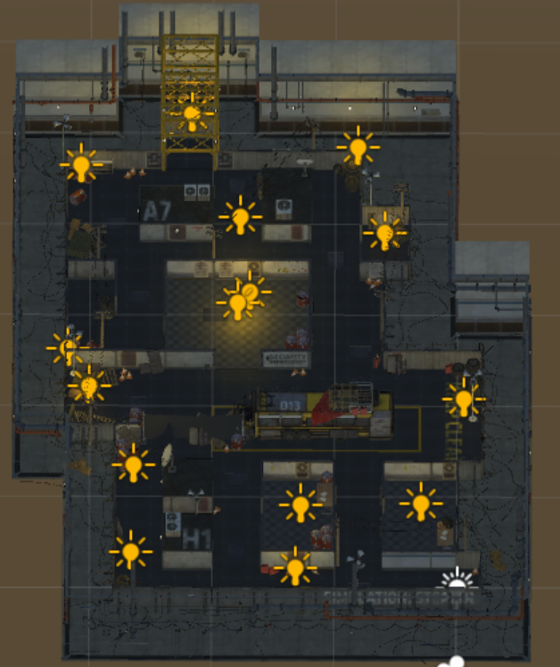
任务5&6：添加警报灯 && 添加警报声
实现警报灯：
添加Directional Light: AlarmLight，红色，触发警报的时候Intensity在0.1~0.5之间不断变化
在AlarmLight上添加脚本AlarmController.cs
public bool isAlarmOn = false; // Flag
private float lowest/highestIntensity = 0.1/ 0.5; // 指定最高值最低值
private float targetIntensity; // 当前需要往lowest还是highest靠近
在Awake()中：
targetIntensity = highestIntensity; // 默认是从lowest变到highest的
isAlarmOn = false; // 确保刚开始警报未触发
在Update()中实现警报灯闪烁的效果：
if(isAlarmOn) { // 警报开启状态
light.intensity=Mathf.Lerp(ligh.intensity, targetIntensity, Time.deltaTime*speed);
现在的警报实现了从lowestIntensity到highestIntensity的变亮过程
判断接近 (Lerp是一个无限趋近的过程) targetIntensity后，改变target的值
if(Mathf.Abs(light.intensity - targetIntansity) < 0.05f) { // 达到目标值
if(targetIntensity == highestIntensity) {
targetIntensity = lowestIntensity;
} else { 同理; }
当警报消除的时候，需要将Intensity设为0（直接设置会显得不自然，采用Lerp方法）
light.intensity = Mathf
但是（个人认为）这么写需要一直执行intensity的赋值操作
为了让外界访问AlarmController.cs方便，采用单例模式
public static AlarmController _instance;
在Awake()中：_instance = this;
在外界直接访问_instance即可
public class AlarmController : MonoBehaviour {
public static AlarmController _instance;
public bool isAlarmOn = false;
private Light alarmLight;
private float lowestIntensity = 0.1f;
private float highestIntensity = 0.75f;
private float targetIntensity;
private float currentIntensity;
private float intensityChangeSpeed = 5f;
void Awake () {
_instance = this;
targetIntensity = highestIntensity;
currentIntensity = lowestIntensity;
isAlarmOn = false;
alarmLight = GetComponent<Light>();
}
void Update() {
if (isAlarmOn) {
if (Mathf.Abs(currentIntensity - targetIntensity) < 0.05) {
if (targetIntensity.Equals(highestIntensity)) {
targetIntensity = lowestIntensity;
} else {
targetIntensity = highestIntensity;
}
}
currentIntensity = Mathf.Lerp(currentIntensity, targetIntensity,
Time.deltaTime * intensityChangeSpeed);
} else {
// 警报处于关闭状态
currentIntensity = Mathf.Lerp(currentIntensity, 0,
Time.deltaTime * intensityChangeSpeed);
}
alarmLight.intensity = currentIntensity;
}
}实现警报声效果：
在env_stealth_static模型里会找到若干个喇叭: prop_magaphone
对这六个喇叭添加AudioSource组件，用于播放声音 alarm_triggered
取消勾选play on awake
将Min Distance设置大一点 (5)
之后需要播放警报声时，需要找到这六个喇叭，因此把他们设置为tag=Siren
任务7：游戏控制器GameController -- 控制整个游戏的运行
游戏控制器：
灯光、声音、警报主角位置（比如主角位置暴露了，需要记录看到主角的最新位置，让机
器人朝着最新位置移动）
创建空物体GameController，添加GameController.cs脚本
需要控制警报灯：
public bool isAlarmOn = false;
在Update()中将isAlarmOn传递给任务6中的单例模式AlarmController
// 因为要随时控制isAlarmOn的值
AlarmController._instance.isAlarmOn = this.isAlarmOn;
需要控制警报声：
// 得到六个警报喇叭
private GameObject[] sirens = GameObject.FindGameObjectsWithTag("Siren");
两个方法：分别控制警报声的响起和停止
private void PlaySiren() {
foreach (GameObject siren in sirens) {
if(!siren.audio.isPlaying) { // 如果没有播放
siren.audio.Play(); // 新版unity改用GetComponent AudioSource
}}}
private void StopSiren() { // 相似，但是不需判断当前是否正在播放 }
在Update()中，控制警报声的播放和停止
if(isAlarmOn) {
PlaySiren();
} else {
StopSiren();
}
public class GameController : MonoBehaviour {
public bool isAlarmOn = false;
private GameObject[] sirens;
private void Awake() {
isAlarmOn = false;
sirens = GameObject.FindGameObjectsWithTag("Siren");
}
private void Update() {
AlarmController._instance.isAlarmOn = this.isAlarmOn;
if (isAlarmOn) {
PlaySiren();
} else {
StopSiren();
}}
private void PlaySiren() {
foreach (GameObject siren in sirens) {
if (!siren.GetComponent<AudioSource>().isPlaying) {
siren.GetComponent<AudioSource>().Play();
}}}
private void StopSiren() {
foreach (GameObject siren in sirens) {
siren.GetComponent<AudioSource>().Stop();
}}
}任务8&9：实时摄像机CCTV Camera && 摄像机的自动旋转
任务10：摄像机的警报触发功能
在Prefab中可以找到 prop_cctvCam
在环境中需要有三个cctv Camera，分别在
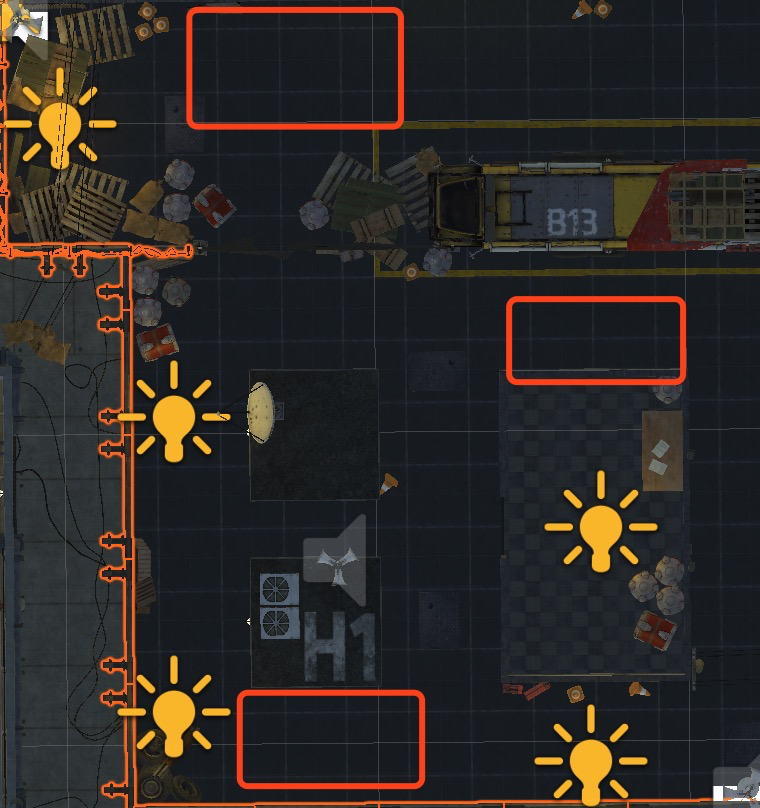
创建空物体Camera，用于放置所有cctvCamera
第一个camera放在bus的两桶油下方
摄像机的旋转（Joint）通过x和y的旋转实现，设置为低头60°
给摄像机添加灯光
在cctv_cam_body上添加Light组件，Light设为Spot(探照灯)
Light的cookie设置为texture: fx_cameraView_alp，颜色改为红色
将cctv_collision添加进cctv_cam_body，调整位置
取消cctv_collision的renender渲染
给collision添加mesh collider碰撞器，用于碰撞检测
将上面的cctv_Camera做成prefab
将其他两个camera分别放置
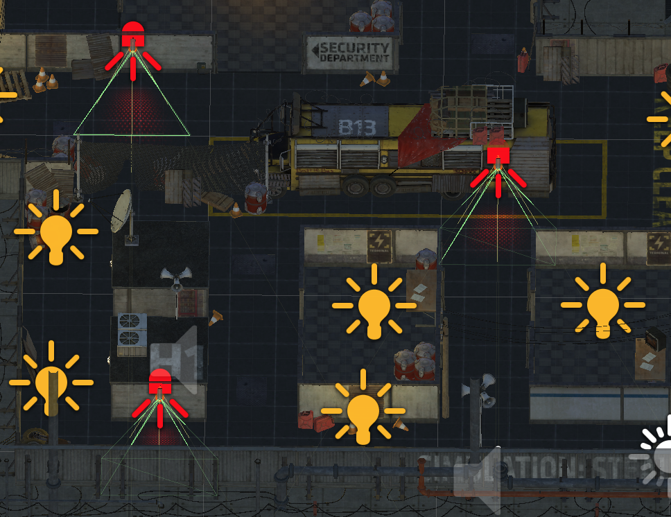
摄像机的旋转：
通过Animation的方式，控制joint部分的y轴旋转
1. 新建Animator -- Window->Animation->Create CameraSweepAnimation.anim
2. Add Property: Transform->Rotation
3. 在对应时间点上添加KeyFrame，并设置Rotation.y的值（90~0~-90）
Sample为每秒的帧数
4. 因为左下角的摄像机不需要进行旋转，因此不能apply to prefabs
在另一个需要旋转的摄像机上添加Animator组件，并赋值，即可
摄像机的警报触发：
思路：在左下角摄像机中完成警报触发功能，并apply to prefabs
1. 在prop_cctvCam的collision子物体上添加脚本CctvCamCollision.cs
2. 将碰撞器设置为Trigger，因为不需要有物理碰撞效果
3. OnTriggerEnter(Collider other) {}
if(other.tag.Equals("Player")) { // 触发警报 }
4. 触发警报需要设置GameController.cs中的isAlarmOn
GameController设置为单例模式
public static GameController _instance;
_instance = this;
设置isAlarmOn：
GameController._instance.isAlarmOn = true;
5. 需要记录当前警报触发位置
在GameController.cs中
public Vector3 lastPlayerPos;
GameController._instance.lastPlayerPos = other.transform.position;
6. 使用OnTriggerStay()更好，因为当Player在其中移动的时候，会触发位置更新
任务11：标签的管理（代码管理）
使用代码进行标签的管理（使用字符串的过程中很可能出现字符串打错等情况）
创建脚本Tags.cs
// 注意：Tags不是作为一个组件存在的，只是存放了一些变量
public const string player = "Player";
// const -- 常量（tags不需要修改）
使用的时候：
if(other.tag == Tags.player) {}
还有其他tags：
"Siren"、"Enemy"等
任务12&13：添加激光警报装置 && 警报的触发和闪烁
fx_laserfence_laser: 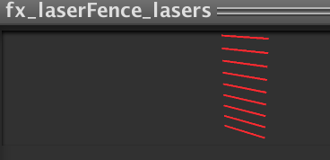
调整大小、角度和位置（门柱上正好有孔，与laser一一对应）
1. 给laser添加Collider组件，用于碰撞检测 -- BoxCollider，选择Trigger
2. 给laser添加light组件，发光：PointLight、范围变小、红色、强度增大
3. 给laser添加Audio Source组件: Audio->laser_ham，发声：
Spetial Blend、min/max distance、PlayOnAwake、Loop
4. 做成Prefab
5. 创建空物体lasers，放入另外五个激光警报(一共6个)即可
激光警报的触发：
添加脚本LaserController.cs
OnTriggerStay() {
// 和摄像头触发警报一样的操作
// 因此在GameController中写成函数public void SwitchAlarmOn(Transform t)
if(tag....) GameController._instance.SwitchAlarmOn(other.transform);
Apply to prefabs.
激光警报的闪烁：
两个激光（最长的那两条）需要间隔闪烁，方便Player的通过
在LaserController中：
public bool isFlicker;
public float onTime = 3f;
public float offTime = 1.5f;
private float timer = 0;
private void Update() {
if(isFlicker) {
if(this.gameObject.GetComponent<Renderer>().enabled) {
// 当前亮着
timer += Time.deltaTime;
if(timer >= onTime) {
this.gameObject.GetComponent<Renderer>().enabled = false;
timer = 0;
}
} else {
// 当前暗着
timer += Time.deltaTime;
if(timer >= offTime) {
this.gameObject.GetComponent<Renderer>().enabled = true;
timer = 0;
}}}}(Collider也需要禁用和启用) --
gameObject.GetComponent<BoxCollider>().enabled;
在Inspector中将两个需要闪烁的激光的isFlicker属性设置为true
两个激光闪烁不同步，一个为(1.6, 2.8), 一个为(2.1, 2.5)（随意）
任务14&15：主角和主角的动画
添加主角：
Models->char_ethan
给Player添加碰撞器Capsule Collider
给Player添加刚体Rigidbody
因为主角不需要通过rigidbody进行移动（使用动画控制），所以勾选IsKinematic
(在任务16中会发现这是一个bug）
主角在(x, z)平面上移动，且只围绕y轴旋转，所以Freeze Position: y; Rotation: x, z
主角移动的动画：
在Humanoid中的动画是人形动画，可以使用
新建一个Animator Controller，名为PlayerController
打开Animator编辑器（选中PlayerController，Window->Animator)
1. 主角的状态：
walk/ run (walk和run是同一个动作，只不过速度不同 -- 相同动画)
sneaker
idle
death
2. 添加parameter
float: speed -- 移动速度
bool: sneaker -- 是否处于sneaker状态（按下shift键）
3. 默认状态：idle
将humanoid_idel->Idle动画拖入状态机（黄色为默认动画）
4. 右键Create State -> From Blend Tree
(上面提到walk和run是同一个动作，用BlendTree实现)
命名为Locomotion (移动、运动)
双击进入编辑模式
Add Motion Field，添加Walk和Run动画
在Parameter中选择speed，用speed来控制walk和run的融合
uncheck Automate Thresholds (自动生成参数)
取消勾选后可以手动确定：参数是根据哪个值来确定的，这里选择speed
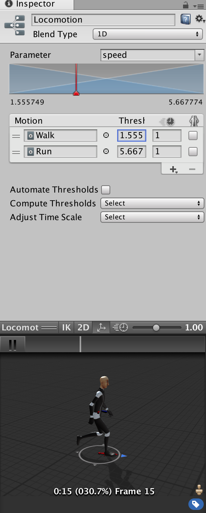
这里表示1.555在Walk，speed增大渐渐进入run的状态，5.667为run状态
5. Idle->Locomotion
make transition: Conditions: speed > 0.1
Locomotion->Idle: speed < 0.1
6. Sneak: humanoid_sneak: sneak动画拖入状态机
Idle->Sneak:
make transition: Conditions: speed > 0.1 && sneak == true;
Sneak->Idle: speed < 0.1
7. Locomotion->Sneak:
speed > 0.1 && sneak == true;
Sneak->Locomotion:
speed > 0.1 && sneak == false;
由于player的移动是通过动画实现的
因此如果觉得移动过慢/快，可以修改对应状态的speed
8. Dying: humanoid_dying->Dying
添加parameter: bool dead
因为任何状态下都会死亡 --
AnyState->Dying: make transition: dead = true;
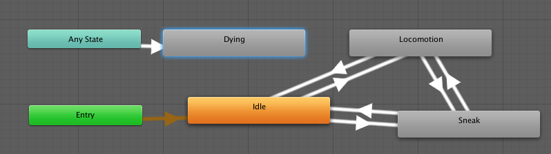
任务16&17：控制主角的运动和移动
运行游戏，手动调整主角的速度，会发现主角出现了移动，主角的transform也发生变化
由于Player->Animator勾选了属性Apply Root Motion，表示动画会影响transform的值
思路：按下上下左右键时，设置speed即可
根据按键控制朝向
在char_ethan添加脚本PlayerController.cs
在Update()中实现：
// 得到按键的信息
float h = Input.GetAxis("Horizontal");
float v = Input.GetAxis("Vertical");
// 需要得到Animator来改变speed的值
private Animator anim = GetComponent...
(我的思路)
anim.SetFloat("Speed", (Mathf.Max(h,v) * 5.56f));
-- 结果为不适合
1. 数值变化太快，walk->run过于迅速
2. 而且延迟较大，Input.GetAxis()的值需要时间来归零和增大
(正确思路 -- 利用差值)
if(Mathf.Max(Mathf.Abs(h), Mathf.Abs(v)) > 0.1f) {
// 开始移动
newSpeed = Mathf.Lerp(anim.GetFloat("speed"), maxSpeed, delta...)
} else { // 停止移动
// 相同思路，利用差值，但是将speedRate增大，因为需要很快停止移动
// 试验过后发现还是不好控制，于是直接将speed设为0
// 但是从跑步到Idle的动画很不平滑 -- 自行选择
newSpeed = 0;
}
anim.SetFloat("speed", newSpeed);
出现bug -- Player会进行穿墙，就好像Collider没有任何作用一样
原因：任务14中给Player添加Rigidbody时勾选了IsKinemetic选项，取消勾选即可
控制Player的移动方向：
在需要移动的if条件中：
// 取得目标方向
Vector3 targetDir = new Vector3(h, 0, v);
// 取得当前方向
Vector3 currDir = transform.forward;
// 取得两个方向的夹角
float angle = Vector3.Angle(targetDir, currDir);
// 使用匀速旋转的方法
transform.Rotate(Vector3.up * angle * Time.deltaTime * rotateSpeed);
// rotateSpeed可设为5
到此为止player的移动功能实现了，但是
出现Bug --
1. 角色在停止控制后有的时候会继续不听旋转
(个人推测是惯性？)
将角色的Rotation: y Freeze即可
2. 拐弯的时候会出现有的时候往大弯绕
比如：角色朝左，向下控制，角色会通过上右下而向下移动
angle的值也是从90变大到180再变小
细心观察会发现，角色永远是顺时针旋转
原因：Vector3.Angle()返回值没有正负，小于180°
Rotate(...)方向为Vector3.up，因此永远是顺时针旋转
而旋转一些以后，angle值变大，需要继续旋转，直到angle值为0
解决方法 -- 想不出如何判断使用Vector3.up还是Vector3.down
舍弃该方法
使用Quaternion和Slerp来解决
Quaternion targetQuaternion = Quaternion.LookRotation(targerDir);
// 四元数返回的是一个带有方向的角度 (该函数默认以Vector3.up为上方)
transform.rotation = Quaternion.Slerp(transform.rotation,
targetQuaternion, Time.deltaTime * rotationSpeedRate);
private Animator animator;
private float increaseSpeedRate = 2.5f;
private float decreaseSpeedRate = 60f;
private float rotateSpeedRate = 2;
private float newSpeed;
private const float maxSpeed = 5.66f;
private void Awake() {
animator = GetComponent<Animator>();
}
void Update() {
float h = Input.GetAxis("Horizontal");
float v = Input.GetAxis("Vertical");
if (Mathf.Max(Mathf.Abs(h), Mathf.Abs(v)) > 0.1f) {
// 开始移动
newSpeed = Mathf.Lerp(animator.GetFloat("speed"), maxSpeed,
Time.deltaTime * increaseSpeedRate);
// 开始旋转
// 取得目标方向
Vector3 targetDir = new Vector3(h, 0, v);
Quaternion targetDirQuaternion = Quaternion.LookRotation(targetDir);
transform.rotation = Quaternion.Slerp(transform.rotation,
targetDirQuaternion, Time.deltaTime * rotateSpeedRate);
} else {
// 停止移动
newSpeed = Mathf.Lerp(animator.GetFloat("speed"), 0,
Time.deltaTime * decreaseSpeedRate);
// newSpeed = 0;
}
animator.SetFloat("speed", newSpeed);
}实现sneak缓慢行走：
if(Input.GetKeyDown(KeyCode.LeftShift)) {
anim.SetBool("sneak", true);
}
if(Input.GetKeyUp(KeyCode.LeftShift)) {
anim.SetBool("sneak", false);
}
会发现，从Idle时按住shift后再按方向键，刚开始一小小段时间会进行walk而不是sneak
解决方法 --
将动画状态机中Idle->Locomotion的condition加上sneaker=false;即可
此时sneak的速度有点慢
控制sneak的动画播放速度即可
选中动画状态机中的sneak，将inspector中的speed加大即可
任务18：主角行走声音和游戏背景音乐
添加背景音乐：
在GameController中添加AudioSource: music_normal，PlayOnAwake，Loop，2D
添加行走声音：
在主角上添加AudioSource: player_footsteps
在PlayerController.cs中添加两个方法
void PlayFootstepsAudio() {
if(!audio.isPlaying) {
audio.Play();
}}
void StopFootstepsAudio() {
audio.Stop();
}
在Locomotion的状态下需要播放声音，其他状态不要
if(anim.GetCurrentAnimatorStateInfo(0).IsName("Locomotion")) {
// play audio
} else {
// stop audio
}
切换背景音乐：
当警报被触发的时候，背景音乐会从music_normal切换至music_panic
思路：如果直接暂停播放会显得比较突兀，因此使用对两个Volume进行差值运算的方法
在GameController上添加另一个AudioSource: music_panic, Loop
在GameController.cs中：
定义两个AudioSource来存放两个声音
在Update()中修改两个AudioSource的Volume
在原有的isAlarmOn判断下
musicNormal.volume=Mathf.Lerp(musicNormal.volume, 0, Time.deltaTime);
musicPanic.volume=Mathf.Lerp(musicPanic.volume, 1, Time.deltaTime);
!isAlarmOn时也类似
也可以添加一个musicFadeSpeed来控制渐变速度
Panic的背景声音有点大，因此改为0.5f
任务19：添加自动门
自动门机制：当主角靠近门的时候会门会自动打开: door_generic_slide
门的模型都自带两个动画 open和close
创建空物体，用于存放所有门
使用Animator状态机进行门的控制
新建Animator，名为normalDoorAnimationController
将两个动画拖入状态机 -- 默认为close状态，设为default
添加Parameters: bool closing; // 当closing为true时，进行关闭，为false时进行开启
closing初始值为true
添加状态close和open之间的transition
给door_generic_slide->door_generic_slide_panel 添加BoxCollider来检测碰撞
给door_generic_slide添加sphere collider，用于trigger开门动画
在door上添加DoorController.cs脚本 -- 代码控制门的开关
因为是控制门的开关，因此如果是Enemy或Player在触发区内，保持开门状态
OnTriggerStay(Collider other) {
if(other.tag == Tags.Player || ... == Tags.Enemy) {
anim.SetBool("closing", false);
}}
// 那如何关门呢？OnTriggerExit()? 不行，如果区域内有两个人的话，怎么解决？
// 使用count来计数 -- 就不能用OnTriggerStay了
OnTriggerEnter(...) {
if(other.tag ... || ... ) {
count++;
}}
OnTriggerExit(...) { // 相同情况 count--; }
在Update中用count来判断是否开关门
doorAnimator.SetBool("closing", (count<=0));
添加开关门的声音：打开和关闭时播放声音
在门上添加AudioSource: door_open
在Update中更改doorAnimator.closing时
// 播放声音
if(anim.IsInTransition(0) {
// 如果在0 layer中正在进行某个Transition
audioDoorOpen.Play();
将门做成Prefab，并创建其他两扇门
任务20：添加电梯门 -- 设置内侧外侧打开和关闭动画
电梯的自动门是两扇，往两边打开
电梯门分为外侧和内侧两扇门（内侧门即电梯，跟随上下移动的）
添加外侧门：door_exit_outer
相同的，分别给door_exit_outer_left和right添加上BoxCollider
给door_exit_outer添加上SphereCollider作为Trigger
AudioSource为door_open
外侧门的控制代码使用上一任务的DoorController.cs即可
Animator使用上一任务的NormalDoorController即可
-- 复制一个AnimatorController，并将状态中的动画(Motion)换成对应的动画
door_exit_outer_close和door_exit_outer_open
添加内侧门：prop_lift_exit
注意电梯门的方向 prop_lift_exit->door_exit_inner
在Lift上添加脚本LiftController.cs
// 让inner door的z轴坐标跟随outer door的x轴坐标变化即可
// 首先得到是个transform: inner_door和outer_door的
innerDoorLeft.position = new Vector3(outerDoorLeft.position.x,
innerDoorLeft.position.y, innerDoorLeft.position.z);
innerDoorRight.position = new Vector3(outerDoorRight.position.x,
innerDoorRight.position.y, innerDoorRight.position.z);
内侧门的开关实现了，但是速度会比较快，因此采用另一种方法 -- Lerp
newInnerDoorLeftX = Mathf.Lerp(innerDoorLeft.position.x,
outerDoorLeft.position.x, Time.deltaTime);
再给内侧门左右加上BoxCollider
任务21：对电梯门添加钥匙控制
因为两种门共用一个脚本DoorController.cs
使用一个bool keyRequired = false; 来判断该门是否需要钥匙?打开
在PlayerController.cs中使用bool hasKey=false; 来记录当前是否拥有钥匙
修改DoorController.cs中OnTriggerEnter部分：
如果该门需要key，且collider为Player，且身上有key，才进行count++
-- enemy在需要key的门前不会使其打开
if(keyRequired) {
if(other.tag == Tags.player) {
if(other.gameObject.getcomponent<...script...>().GetHasKey()) {
count++;
}}} else { // normal door }
对于OnTriggerExit() 也一样需要相同的判断，否则会平白无故count--;
-- 小小不算bug的bug -- 在Trigger内部修改hasKey，就再也不能开门了
逻辑，修改hasKey后出去, count--, count=-1, 再进去, count++, count=0;
将电梯外门的keyRequired勾选上即可
当没有钥匙的人接近了门的时候，需要播放AudioSource: door_accessDenied
判断是否Player有钥匙后
else {
GetComponents<AudioSource>()[1].Play();
任务22：主角拾起钥匙的功能
Models->prop_key_card
放置在这个位置
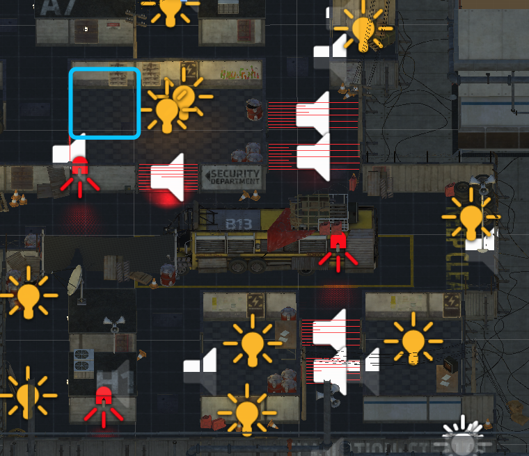
给Key添加Light，蓝色，intensity调大
创建Animator: KeyCardController
将key_card中自带的默认动画spin拖入状态机即可 -- key的旋转动画
给Key添加Sphere Collider，用来作为Trigger，检测主角是否到达拾起钥匙的区域
给Key添加脚本KeycardController.cs
OnTriggerEnter(...) {
// Player进入触发区时，拾起钥匙
PlayerController player = other.GetComponent<PlayerController>();
player.hasKey = true;
// 播放得到钥匙的声音
-- 给Key添加一个AudioSource: keycard_pickUp
通过audioSource.Play() 能行吗？不行，因为this已经被Destroy了
解决方法：AudioClip --
public AudioClip audio;
// 在transform.position处播放audioClip
AudioSource.PlayClipAtPoint(audio, transform.position);
// 销毁钥匙
Destroy(this.gameObject);
}
任务23：激光的开关控制
游戏机制：一个电闸开关控制一个激光，Player在电闸旁边按下z来关闭对应激光
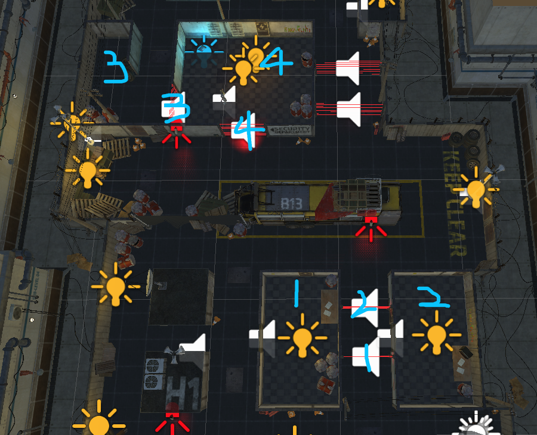
创建空物体switchUnits，用来存放所有(4个)开关
关闭开关后，激光会消失，开关上面锁的显示会改变(改变材质即可)
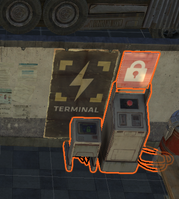
给SwitchUnit添加BoxCollider防止Player走进去
添加BoxCollider作为Trigger -- Sphere不合适，在墙外也能触发
添加AudioSource: switch_deactivation -- 解锁声音
添加脚本SwitchUnitController.cs控制开关逻辑
OnTriggerStay() { -- 需要在触发区域内
if(other.tag == Tags.player) { -- 如果是Player进入
if(Input.GetKeyDown(KeyCode.z)) { -- 如果按下了z键
// 关闭对应激光 -- public GameObject laser;
laser.SetActive(false);
// 播放声音
audio.Play();
// 修改解锁标志 -- 替换material -- public Material unlockedMaterial;
transform.Find("prop_switchUnit_screen").
GetComponent<MeshRenderer>().material = unlockedMaterial;
}}}
-- 小Bug：在触发区域内多次按下z键，会进行多次的音效播放
解决方法(个人)：
定义一个bool isSwitchValid = true
在OnTriggerStay最外层用if(isSwitchValid) 判断即可
将其做成Prefab，添加其他四个SwitchUnit
private void OnTriggerStay(Collider other) {
// 需要在触发区域内
if (isSwitchValid) {
if (other.tag == Tags.player) {
// 如果是Player进入
if (Input.GetKeyDown(KeyCode.Z)) {
// 按下z键
// 关闭对应激光 -- public GameObject laser;
laser.SetActive(false);
// 播放声音
unlockedAudio.Play();
// 修改解锁标志(替换material) - public Material unlockedMaterial;
transform.Find("prop_switchUnit_screen").
GetComponent<MeshRenderer>().material = unlockedMaterial;
isSwitchValid = false;
}}}}任务24&25&26：摄像机的跟随移动 && 摄像机的视野问题 && 摄像机的缓动
按F聚焦Player，在Scene视图下调整好合适的视角
选中MainCamera，GameObject->Align With View -- 将Camera设置为当前视角
摄像机的跟随移动：
会利用很多Lerp差值运算
在摄像机上添加脚本 FollowPlayer
// 得到相机和Player之间位置的offset
private Transform player = GameObject.FindWithTag(Tags.player).transform;
private Vector3 offset = tranform.position - player.position;
offset = new Vector3(0, offset.y, offset.z); // 保持x方向值相等
// 在Update中更新Camera位置
transform.position = player.position + offset;
出现问题：若主角在下侧墙的上方，则视野会被墙挡住
--改进相机的视野实现
摄像机的视野智能化调整：
解决思路：从Camera发射射线到Player，如果射线没有接触到Player，则旋转
如何旋转？得到Player正上方的距离为offset的点，在该点和Camera之间等距划分
三点，依次判断这三点是否符合要求，若符合，调整Camera位置和方向
代码实现：
// 起始点
Vector3 beginPos = player.position + offset;
// 终点 -- Player正上方点
Vector3 endPos = player.position + offset.magnitude * Vector3.up;
// 得到两点之间的四等分点 (3个点) -- 用向量运算方法或差值方法均可
Vector3 pos1 = Vector3.Lerp(beginPos, endPos, 0.25f);
其余的为pos2 = ... 0.5f; pos3 = ... 0.75f;
存放在数组中：
Vector3[] posArray = new Vector3[5];
// 判断在哪个点可以看到Player -- 用射线的方法
foreach(Vector3 pos in posArray) {
// 遍历所有可能位置
RaycastHit hitInfo;
if(Physics.Raycast(pos, player.position - pos, out hitInfo) {
// 如果有碰撞的话
if(hitInfo.collider.tag == Tags.player) {
// 如果在视野内能看到Player -- 移动摄像机
transform.position = pos;
// 改变摄像机的朝向
transform.LookAt(player.position);
break;
}}}
现在，摄像机的视角问题解决了，但是摄像机需要进行缓动，不然会显得卡顿 -- Lerp
摄像机的缓动：
将上面的transfrom.position = pos; 改为
transform.position = Vector3.Lerp(transform.position, pos, Time.deltaTime);
将上面的transform.LookAt(player); 改为
Quaternion currQuaternion = transform.rotation;
transform.LookAt(player);
transform.rotation = Quaternion.Slerp(currQuaternion, transform.rotation,
Time.deltaTime);
private Transform player;
private Vector3 offset;
private float cameraMovingSpeed = 2;
private float cameraRotateSpeed = 10;
private void Start() {
player = GameObject.FindWithTag(Tags.player).transform;
// 保持在x轴方向值相同
offset = transform.position - player.position;
}
private void Update() {
// 得到起始点和终点
Vector3 beginPos = player.position + offset;
Vector3 endPos = player.position + offset.magnitude * Vector3.up;
// 得到四等分点
Vector3[] posArray = new Vector3[5];
float lerp = 0.25f;
float currLerp = 0;
for (int i = 0; i < posArray.Length; i++) {
posArray[i] = Vector3.Lerp(beginPos, endPos, currLerp);
currLerp += lerp;
}
// 判断哪个点是适合的
foreach (Vector3 pos in posArray) {
RaycastHit hitInfo;
if(Physics.Raycast(pos, player.position - pos, out hitInfo))
Debug.DrawRay(pos, player.position - pos);
print(hitInfo.collider);
if(hitInfo.collider.tag == Tags.player) {
// 在视野内能看到Player
transform.position = Vector3.Lerp(transform.position, pos,
Time.deltaTime * cameraMovingSpeed);
// 改变摄像机的朝向 -- 使用Quaternion的差值进行转向
Quaternion currQuaternion = transform.rotation;
transform.LookAt(player);
transform.rotation = Quaternion.Slerp(currQuaternion,
transform.rotation, Time.deltaTime * cameraRotateSpeed);
break;
}}}}后期运行发现bug -- 当Player走到cctv_Cam下的collider的时候，也会导致camera视角变化
将hitInfo.collider.tag == Tags.player修改为
hitInfo.colllider.tag == Tags.player || hitInfo.collider.tag == Tags.cctvCollider
任务27：Navigation自动寻路导航网格
机器人的自动导航系统 --
把env_stealth_static和battle_bus设置为static (Navigation bake的目标)
Window->Navigation->Bake->Bake
检查一下自动生成的区域是否正确 -- 发现网布下方的通路没有打开
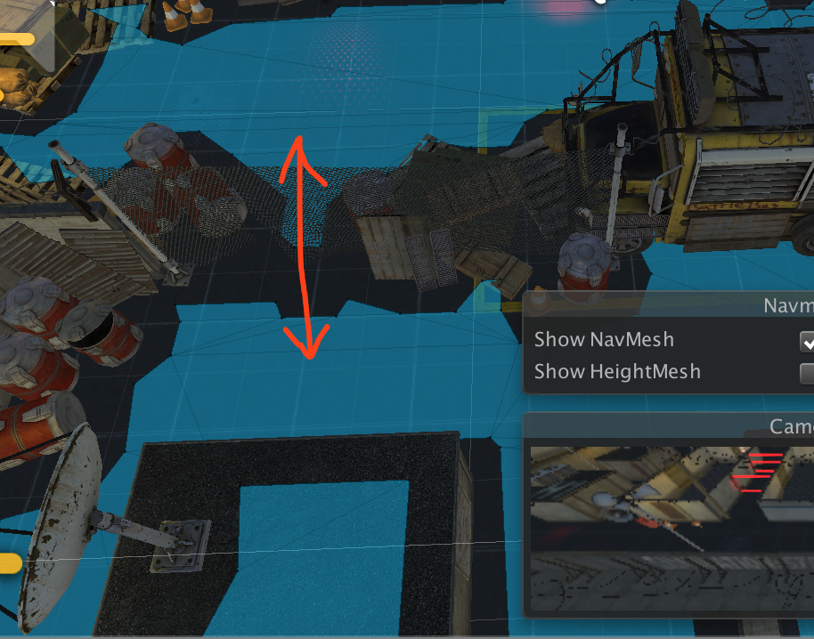
减小Agent Radius (增大区域的面积，离突起物更近的地方也可被视作可用区域)
减小Agent Height
Slope=0；因为在该场景下，是平面的，无需设置坡度
StepHeight=0；高度差小于这个值的，视为通路
任务28：添加机器人
Enemy: char_robotGuard -- AI实现、动画实现、射击实现等等
1. 防止碰撞墙体等
添加碰撞器 Capsule Collider
添加Rigidbody
2. 实现导航功能 -- 判断机器人当前应该去的方向
添加Nav Mesh Agent组件
Radius 自身宽度
Speed 移动速度
Acceleration 加速度
AngularSpeed 旋转速度
等等
注：NavMeshAgent是可以控制运动的（直接设置position）
但是由于动画也会控制运动，故不使用
3. 实现发现Player功能 -- 即机器人视野和听觉
添加Sphere Collider作为Trigger
当Player在Trigger之内，会进行机器人视野的检测
将机器人做成Prefab
任务29：设置机器人的状态机（动画效果）
创建Animator，名为EnemyController
BaseLayer -- Idle, Locomotion,
将动画humanoid_idle拖入状态机，set as default
创建BlendTree，名为Locomotion，表示机器人的运动
机器人运动动画：
Walk/Run, Walk/RunLeft/RightShort/Medium/Wide
TurnOnSpotLeft/RightA/B/C/D
将这些动画都添加如BlendTree的motion中
参数为speed和rotation，因此为2d的BlendTree
将BlendType改为2D Freeform Cartesian
Compute Positions = Speed and AngularSpeed，数值会自动生成
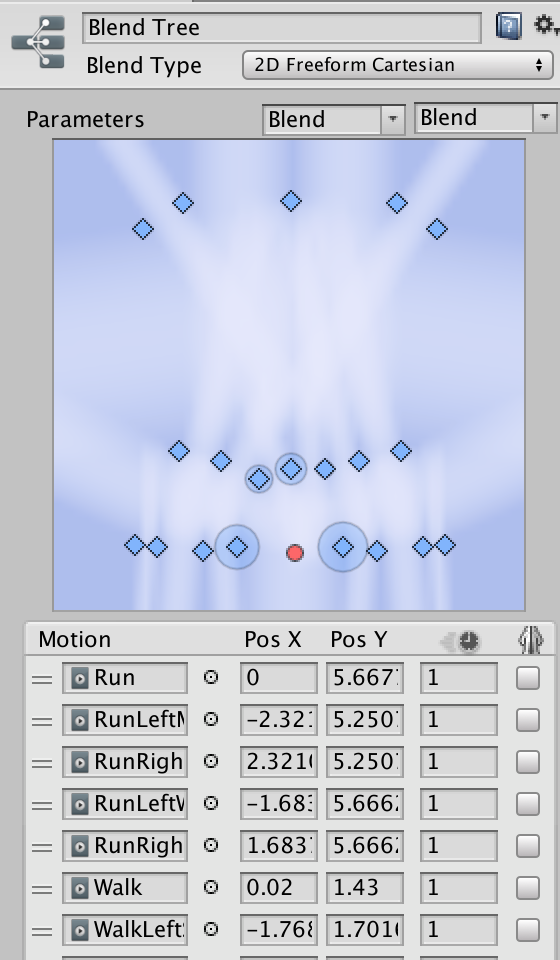
可以看出来，每个点代表一个动画状态，
PosX表示转向速度，PosY表示行走速度
比如竖直中间两个点上面的为Run，下面的为Walk
需要两个Float Parameter变量分别对应AngularSpeed: PosX和Speed: PosY
发现Idle其实应该在Locomotion中，而不是单独存在
删除Idle状态，将Idle动画添加到Locomotion中
射击动画：
weapon_lower/weapon_raise/weapon_shoot
增加一个Layer，称为Shoot
添加一个bool Parameter: playerInSight，用来判断是否处于射击状态
添加一个Empty状态作为默认状态 default
transition: default -> weapon_raise : playerInSight = true
transition: weapon_raise -> weapon_shooting : 没写condition时表示接着播放
这里也可以写上playerInSight=true作为条件，表示raise后如果还是true才射击
如果为false了就不进行射击了
transition: weapon_raise -> weapon_lower : playerInSight = false;
transition: weapon_shoot -> weapon_lower : playerInSight = false;
如果playerInSight依然为true，则会进行循环播放
transition: weapon_lower -> default : no condition
因为射击动画只控制了手的动作而没有控制身体
因此需要创建一个身体遮罩
在Project中create->Avatar Mask，命名为EnemyShootMask
在Inspector中选择Humanoid，将全身禁止只留下双手和头部
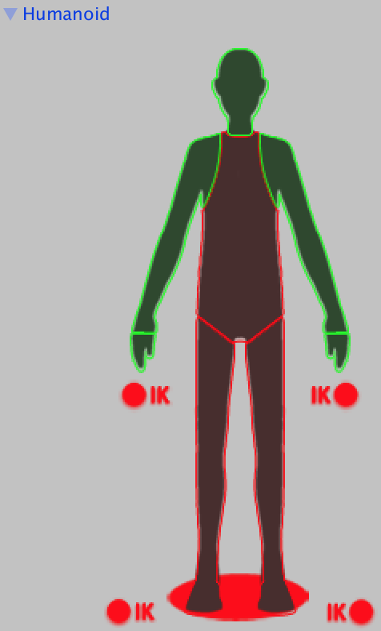
点击状态机的Shoot Layer旁边的设置按钮，将EnemyShootMask赋值
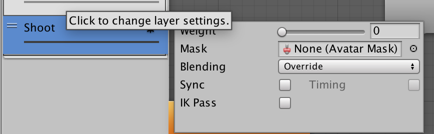
因为这一Layer权重比上一层高，所以Weight = 1，并选用Override
任务30：机器人的听觉和视觉
听觉：Sphere Collider
视觉：前方锥形范围 110°
添加脚本EnemySight.cs
private bool isPlayerInSight = false;
private float viewFieldAngle = 110;
视觉：
当主角在SphereCollider范围内 -- 在OnTriggerStay() 中
if(other.tag = player) {
// 得到两个方向：enemy前方和enemy朝向player的方向
Vector3 forward = transform.forward;
Vector3 playerDir = other.transform.position - transform.position;
float tempAngle = Vector3.Angle(forward, playerDir);
// 判断是否在锥形视野范围之内
if(tempAngle <= viewFieldAngle * 0.5) {
playerInSight = true;
} else { playerInSight = false; }
}
当主角不在SphereCollider范围内（不在听觉范围内） -- OnTriggerExit()
if(other.tag == player) {
playerInSight = false; // 出了这个范围肯定是看不到了
}
听觉：机制 -- 两点之间可通路的最短距离(Navigation)，即墙等障碍物是完全隔音的
听到声音后，会设置警报位置，让Enemy去追踪
存储当前警报位置 -- 被发现的Player位置
public Vector3 alertPosition = Vector3.zero; // 需要被外界使用，默认为zero
在上面Player被看到时，playerInSight=true;后加上 alertPos=other.transform.position;
同理，playerInSight=false;后加上 alertPos=Vector3.zero; // 归零
在TriggerStay中（因为Trigger就是表示可以听到声音的范围）
// 判断player是否处于Locomotion状态
if(playerAnim.GetCurrentAnimatorStateInfo(0).IsName("Locomotion")) {
// 使用NavMeshAgent判断最短路径距离
// private NavMeshAgent navAgent = GetComponent<NavMeshAgent>();
// 因为navAgent.CalculatePath(targetPos, navMeshPah), 需要一个空Path传入
-- calculate a path to a specified point and stored the resulting path
return a bool if there is a path
NavMeshPath navPath = new NavMeshPath();
// navPath.corners，为一个存放所有路径拐点的Vector3数组
if(navAgent.CalculatePath(other.transform.position, navPath)) {
Vector3[] waypoints = new Vector3[navPath.cornors.Length+2];
// 给所有路径点赋值
waypoints[0] = transform.position;
waypoints[waypoints.Length-1] = other.transform.position;
for(int i = 1; i < waypoints.Length - 1; i++) {
waypoints[i] = navPath.corners[i-1];
}
// 计算总长度
float totalDistance = 0;
for(int i = 1; i < waypoints.Length; i++) {
// 从第二个点开始，计算与前一个点之间的距离
totalDistance += (waypoint[i-1] - waypoint[i]).magnitude;
}
// 总长度与最大长度进行比较，判断是否在最大距离之内
private SphereCollider sphereCollider = GetComponent<...>();
if(totalDistance <= sphereCollider.radius) { // 可以听到
alertPosition = other.transform.position;
private void OnTriggerStay(Collider other) {
if(other.tag == Tags.player) {
// Player进入听觉视觉触发区域
// 得到两个方向：enemy前方和enemy朝向player的方向
Vector3 forward = transform.forward;
Vector3 playerDir = other.transform.position - transform.position;
float tempAngle = Vector3.Angle(forward, playerDir);
// 判断是否在锥形视野范围之内
if(tempAngle <= viewFieldAngle * 0.5f) {
playerInSight = true;
// 更新警报位置
alertPosition = other.transform.position;
} else {
playerInSight = false;
alertPosition = Vector3.zero;
}
// 听觉实现 -- 通路距离在给定范围之内，则进行追踪
if (playerAnim.GetCurrentAnimatorStateInfo(0).IsName("Locomotion")) {
// 若当前Player状态为Locomotion -- 有声音发出
NavMeshPath navPath = new NavMeshPath();
if (navAgent.CalculatePath(other.transform.position, navPath)) {
Vector3[] waypoints = new Vector3[navPath.corners.Length + 2];
waypoints[0] = transform.position;
waypoints[waypoints.Length - 1] = other.transform.position;
for (int i = 1; i < waypoints.Length - 1; i++) {
waypoints[i] = navPath.corners[i - 1];
}
// 计算路径总长度
float totalDistance = 0;
for (int i = 1; i < waypoints.Length; i++) {
totalDistance += (waypoints[i-1]-waypoints[i]).magnitude;
}
// 判断是否在最大距离内 -- 最大距离即为SphereCollider的半径
if (totalDistance <= sphereCollider.radius) {
alertPosition = other.transform.position;
}}}}}
private void OnTriggerExit(Collider other) {
if(other.tag == Tags.player) {
playerInSight = false;
alertPosition = Vector3.zero;
}}运行，听觉和视觉都正常运行
Bug1: 但是，因为SphereCollider的关系，Camera.FollowPlayer()中需要加上另一个条件
hitInfo.collider.tag == Enemy
Bug2: 机器人移动到门附近的时候，因为SphereCollider范围很大，会触发门的开关
而只有当CapsuleCollider进入的时候才会触发门的开关
改为：if(tag... && other.GetType().ToString()=="UnityEngine.CapsuleColiider")
或: if (other.tag == Tags.enemy && other is CapsuleCollider) {
或: if (other.tag == Tags.enemy && other.isTrigger == false) {
即可
任务31：机器人发起警报的功能
警报机制：当Enemy看到Player时，通知其他机器人进行追踪
看到或听到都会更新警报发出位置
记得之前在GameController中有一个警报方法SwitchAlarmOn将isAlarmOn设置为true
那么，在EnemySight.cs中，
当isPlayerInSight为true时，加上一句:
GameController._instance.SwitchAlarmOn(other.transform); // 将player位置传递
实现了Enmey看到Player时，开启警报
还需实现追踪功能
机制：alertPos不等于Vector3.zero时，就进行追踪
而且，GameController中的lastPlayerPos修改时 (其他警报器)，也要进行追踪
当lastPlayerPos修改时，更新
// （Awake()中）用来存储之前的lastPlayerPos;
private Vector3 preLastPlayerPos = GameController._instance.lastPlayerPos;
// 进行检测 -- Update()中
if(preLastPlayerPos != GameController._instance.lastPlayerPos) {
alertPosition = GameController._instance.lastPlayerPos;
preLastPlayerPos = alertPosition;
}
报错： preLastPlayerPosition = GameController._instance.lastPlayerPos;
原因：GameController.cs中_instance = this的赋值在Awake()中
而preLastPlayerPos这句话的赋值也是在Awake()中且用到了_instance
因此可能会出现空指针的错误
解决方法：将preLastPlayerPos的赋值放在Start()中
现在可以通过cctvCam和laser触发警报并修改alertPosition的值，
Bug -- 在cctvCam中移动不会更新lastPlayerPos：
cctvCamCollision.cs中的触发条件改为OnTriggerStay() 而不是OnTriggerEnter()
Bug -- 在SphereCollider之内且playerInSight=false时，alertPosition会被强制设为zero
因为在两个else情况下，把alertPosition设置为了Vector3.zero
解决方法：去掉OnTriggerStay中的设置即可，OnTriggerExit需要设置为zero
任务32&33：使用Navigation控制机器人的巡逻 && 行走的动画
创建空物体waypoints，用来存储巡逻的路径点
在里面创建若干个空物体waypoint -- 用来表示路径的下一个临时目标位置
分别在Scene中设置position
但是空物体在环境中是没有图标表示的，因此不好观察
在Inspector中物体名的左边可以选择icon->other->waypoint
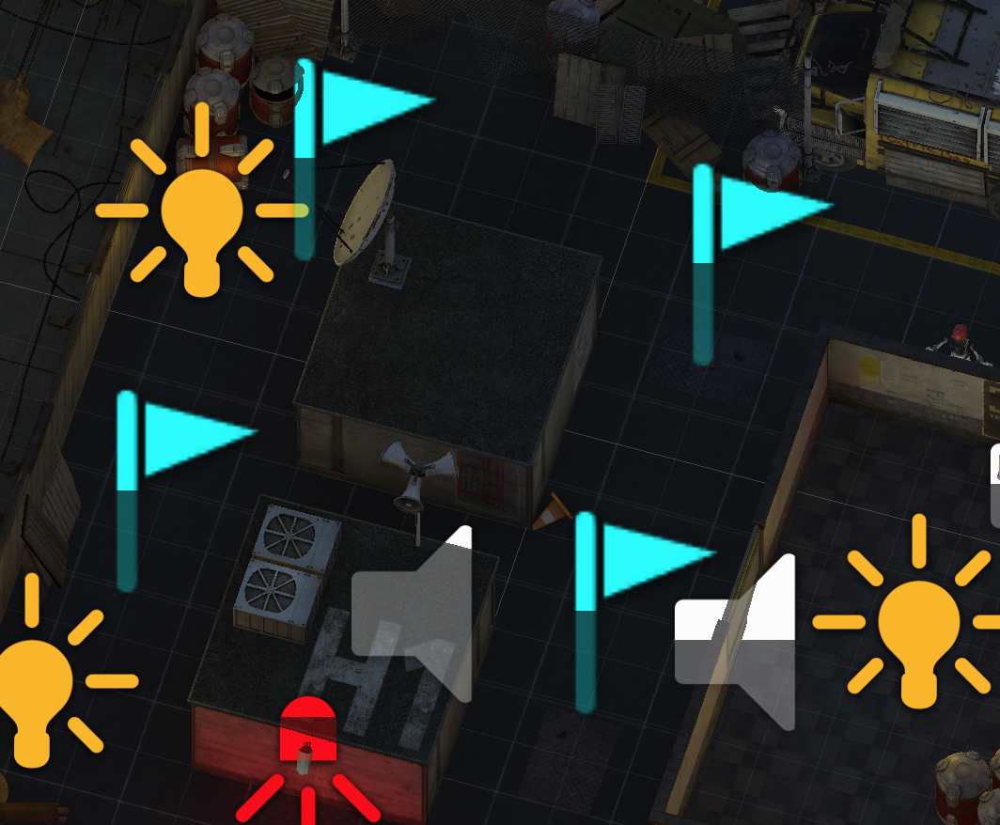
注意：使用NavMeshAgent进行控制，是直接设置transform的
创建脚本EnemyMoveAI.cs
// 定义数组，存储waypoints的位置
public Transform[] waypoints = new Transform[4];
private int index = 0; // 当前目标索引
巡逻的方法：
private void Patrolling() {
-- 机制：巡逻到达一个waypoint后，需要休息一段时间，再去下一个waypoint
-- private float patrolTimer = 0;
-- private float patrolWaitingTime = 3;
// 需要使用NavMeshAgent进行路径导航
-- private NavMeshAgent navAgent = GetComponent<...>();
-- Awake()中，设navAgent.destination = waypoints[index].position; //index=0
// 检测有没到达目标位置
if(navAgent.remainingDistance < 0.5f) {
// 休息
navAgent.isStoped = true;
patrolTimer += Time.deltaTime;
if(patrolTimer >= patrolWaitingTime) {
// 休息完毕，下一个点
// 一共四个点，循环播放，index不能超过三
index++;
index %= 4;
navAgent.destination = waypoints[index].position;
navAgent.isStoped = false; // 开始进行下一个点的寻路
patrolTimer = 0;
}}
现在，机器人可以进行四个点的巡逻的，但是，没有行走动画的播放，仅仅是位置的移动
NavMeshAgent提供的寻路为直接修改transform的，我们利用它的指向功能
结合动画，来实现动画版的巡逻
将NavMeshAgent的位置控制取消
navAgent.updatePosition = false;
navAgent.updateRotation = false;
新建脚本EnemyAnimationController.cs -- 通过控制状态机来控制行动
private NavMeshAgent navAgent = GetComponent<...>();
在Update()里
navMesh.desiredVelocity // 期望速度 -- 当前移动的速度和方向
思路：navMesh的期望速度设置给用来控制动画状态机的Speed和AngularSpeed
当休息时（即navAgent.isStopped = true)
if(navAgent.desiredVelocity = Vector3.zero) {
enemyAnim.SetFloat("speed", 0);
enemyAnim.SetFloat("angularSpeed", 0);
// 注意 重载 SetFloat(name, value, dampTime, deltaTime)
dampTime: 阻尼时间，在该时间内，将name逐渐设置为value，渐变过程
// 直接设置，动画有时候会显得突兀，这里先不用，看看效果不好再用
} else { -- 行走状态
// 计算角度AngularSpeed
float angle = Vector3.Angle(transform.forward, navAgent.desiredVelocity);
// anim中的AngularSpeed为弧度值
float angleRad = Mathf.Deg2Rad * angle; // Dot = 2PI/360
// 算出弧度的方向（正负） -- 根据动画来说，右转为正
-- Vector3.Cross(a,b)
方向：应用左手定则，result向量(中指)分别垂直于a(拇指)和b(食指)
大小：为a和b大小的乘积
思路：通过Cross的方向即可得angleRad的正负：向上为正，向下为负
Vector crossResult = Vector3.Cross(...forward, ...desiredVelocity);
if(crossResult.y < 0) { angleRad = -angleRad; }
anim.SetFloat("angularSpeed", angularSpeed);
思路：当角度大于九十度时，没必要往前走了，便设定为原地旋转，
当角度小于九十度时，边走边旋转
if(angle >= 90) {
anim.SetFloat("speed", 0);
} else {
// 计算当前速度
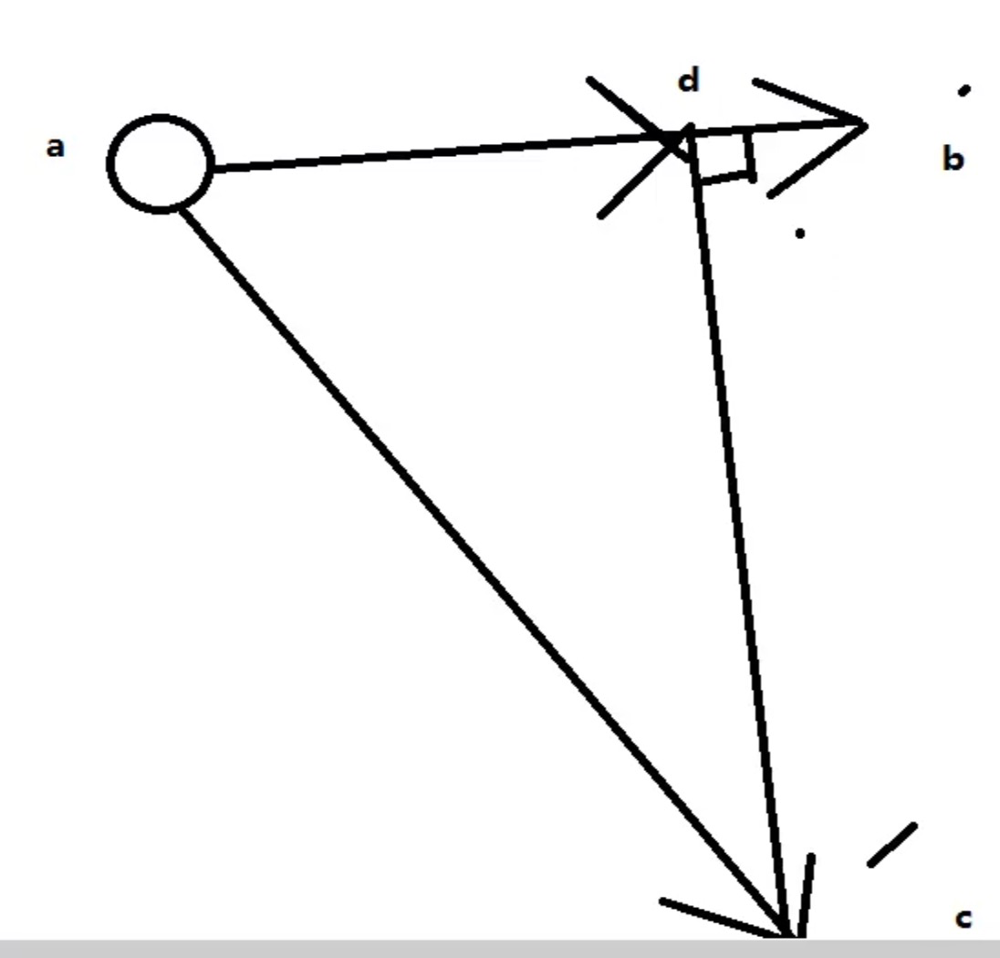
// ab为当前朝向，ac为desiredVelocity
// 当前速度设为ac在ab方向上的分速度ad即可
慢慢加快速度，动画会平滑很多
-- Vector3.Project(vector, onNormal) :
返回vector在onNormal方向上的分向量projection
Vector3 projection = Vector3.Project(...desiredVelocity, ...forward);
anim.SetFloat("speed", projection.magnitude);
}
Bug -- NavMeshAgent的位置与机器人的位置分离了
Siki上没有出现这个情况
同样的问题：http://tieba.baidu.com/p/5313022190?traceid=
解决方法：在Update() 最后将NavMeshAgent的位置设置为transform的位置即可
navAgent.nextPosition = transform.position;
public class EnemyAnimationController : MonoBehaviour {
public float speedDampTime = 0.3f;
public float angularSpeedDampTime = 0.3f;
private Animator enemyAnim;
private NavMeshAgent navAgent;
void Awake () {
enemyAnim = GetComponent<Animator>();
navAgent = GetComponent<NavMeshAgent>();
}
void Update () {
// 如果navAgent.isStopped = true -- 休息状态
if(navAgent.desiredVelocity == Vector3.zero) {
enemyAnim.SetFloat("speed", 0, speedDampTime, Time.deltaTime);
enemyAnim.SetFloat("angularSpeed", 0,
angularSpeedDampTime, Time.deltaTime);
} else {
// 行走状态
// 旋转角度大小
float angle = Vector3.Angle(transform.forward,
navAgent.desiredVelocity);
float angleRad = angle * Mathf.Deg2Rad;
// 旋转角度方向
Vector3 crossResult = Vector3.Cross(transform.forward,
navAgent.desiredVelocity);
if(crossResult.y < 0) { // 左转
angleRad = -angleRad;
}
enemyAnim.SetFloat("angularSpeed", angleRad,
angularSpeedDampTime, Time.deltaTime);
// 两种情况，角度大于90时，原地旋转；小于90时，边走便旋转
if(angle >= 90) {
// 原地旋转
enemyAnim.SetFloat("speed", 0, speedDampTime, Time.deltaTime);
} else {
// 计算speed -- desiredVelocity在当前方向forward上的分速度
Vector3 projection = Vector3.Project(navAgent.desiredVelocity,
transform.forward);
enemyAnim.SetFloat("speed", projection.magnitude,
speedDampTime, Time.deltaTime);
}
}
navAgent.nextPosition = transform.position;
}
}任务34：机器人的追捕 AI
机器人的三种状态：巡逻、追捕、射击
巡逻：普通
追捕：alertPosition != Vector3.zero
射击：EnemySight.isPlayerInSight == true;
EnemyMoveAI.cs中
追捕方法：
private void Chasing() {
nagAgent.speed = 5; // 追捕时速度快 (记住在Patrolling()中navAgent.speed=3;)
navAgent.destination = enemySight.alertPosition; (EnemySight sight = ...)
// 追捕时，目标距离大一些，就可进行射击（）
if(navAgent.remainingDistance < 2f) {
到达目标位置后，若看见Player就自动射击（在Animator和Shooting()中控制）
如果没看见，alertPosition也没更新，就在原地停留一段时间，解除警报
-- public chaseWaitingTime = 5;
-- private chaseTimer = 0;
chaseTimer += Time.deltaTime;
if(chaseTimer > chaseWaitingTime) {
// 解除警报，回到巡逻位置
sight.alertPosition = Vector3.zero;
GameController._instance.lastPlayerPosition = Vector3.zero;
GameController._instance.isAlarmOn = false;
index = 0;
navAgent.destination = waypoints[index];
chaseTimer = 0; //计时器归零
}
任务35：解决bug：视野检测和自动门的开启和关闭
Bug -- 视野检测：若Player与Enemey之间有障碍物(墙)，Enemy也是可见Player的
解决方法：若在视野viewFieldAngle内，则在Enemy眼睛处发射一条射线，方向为playerDir
Raycast的起点为transform.position + Vector3.up * 1.8f; 终点为alertPos
RaycastHit hitInfo;
Physics.Raycast(transform.position+Vector3.up*1.8f, playerDir, out hitInfo);
if(hitInfo.collider.tag == Tags.player) {
在视野内
}
if (tempAngle <= viewFieldAngle * 0.5f) {
// 判断是否有障碍物（如墙）挡住视线
RaycastHit hitInfo;
Physics.Raycast(transform.position + Vector3.up * 1.8f, playerDir, out hitInfo);
if(hitInfo.collider.tag == Tags.player) {
playerInSight = true;
// 更新警报位置
alertPosition = other.transform.position;
GameController._instance.SwitchAlarmOn(other.transform);
} else {
playerInSight = false;
}
} else {
playerInSight = false;
}Bug -- 门的控制在Player和Enemy同时进出的时候有问题
解决方法：将player和enemy分别判断并各自count++/--即可
任务36&37：机器人的射击动画 && 伤害计算
射击动画：
void Update () {
if(enemySight.playerInSight) {
// 只要能看见Player，就射击
Shoot();
} else if (enemySight.alertPosition != Vector3.zero) {
// 有动静 -- 进行追捕
Chasing();
} else {
Patrolling();
}
}
在Shoot()中不处理动画
navAgent.isStopped = true; // 停止导航
-- 调用EnemyAnimationController.cs来控制射击动画的播放
在Update()控制行走的代码后，通过playerInSight的赋值来控制动画
private EnemySight enemySight = GetComponent...
enemyAnim.SetBool("playerInSight", enemySight.playerInSight);
伤害计算：
在player上添加脚本PlayerHealth.cs
public float hp = 100; // 血量
private void TakeDamege(float damage) {
hp -= damage;
}
public bool isPlayerAlive() {
return (hp>0);
在EnemyMoveAI.cs中
在Update()判断Shoot()或Chasing()时，加上判断如果isPlayerAlive才进行该操作
检测enemy状态机中humanoid_weapon_shoot动画的播放：播放一次进行一次伤害计算
动画->Inspector->Curves->Shot：看曲线的变化
在状态机中设置一个参数，用来记录上面Shot曲线的当前值
添加Parameter float Shot, 这个值会自动被曲线Shot的当前值赋值
在Enemy上添加脚本EnemyShooting() -- 用来处理射击有关的操作
在Update()中
if(anim.GetFloat("Shot") > 0.5f) { // 进行了一次射击
Shooting();
} else {
hasShot = false; // 没有开枪，则标志位重置
}
伤害机制：距离越近伤害越大，伤害有保底值
主角在SphereCollider范围之内会进行射击，则在最外侧伤害最低
public float minDamage = 30;
private void Shooting() { // 计算伤害
-- private bool hasShot = false;
if(!hasShot) { // 进行伤害
-- 从PlayerHealth脚本获得
// 计算伤害
float distance = Vector3.Distance(transform.position, playerHealth.transform.pos);
float damage = minDamage+ (100-minDamage)*(distance/sphereCollider.radius);
playerHealth.TakeDamage(damage);
hasShot = true;
}
Player死亡动画：
回顾：在Player的动画状态机中的Parameter bool dead；
dead = true时 播放dead动画
在PlayerHealth.cs中持有animator
在TakeDamage() 中判断
if(!IsPlayerAlive()) {
anim.SetBool("dead", true);
}
Bug -- Player死亡以后，enemy还是会在盯着，没有回去巡逻
解决方法：在EnemySight中触发playerInSight的判断条件里加上
&& playerHealth.isPlayerAlive()
而且Shooting()时把navAgent设为Stopped了
Enemy从Shooting转为Patrolling时候需要重新设置开始
navAgent.isStopped = false;
// navAgent.destination = waypoints[index].position; // 不要也行
Bug -- Enemy在PlayerInSight=true的状态下正在射击，但Player跑出了射击范围
此时Enemy就会呆在原地不动
思路：与上面一个bug相似，Shooting后navAgent被stop了，下一帧转为Chasing()时还是true
在Chasing()刚开始的时候，navAgent.isStopped = false;
Bug -- Player死亡以后，死亡动画会不断播放
思路：猜想是因为状态机中Any State--dead=true-->Dead
AnyState也包括了Dead本身，于是有Dead->Dead的动画
https://blog.csdn.net/ln_polaris/article/details/50724425
将transition属性取消勾选Can Transition To Self即可
任务38&39：添加其他机器人 和 游戏失败状态 && 游戏胜利状态
将robot apply给prefab
创建空物体Robots，用来存储其他两个敌人(一共三个)
创建对应的waypoints
游戏失败状态：
机制：死亡之后，等待4秒，重新加载Scene
IEnumerator ReloadScene() {
yield return new WaitForSeconds(4f);
SceneManager.LoadScene(0);
}
在TakeDamage()中
在播放死亡动画之后
StartCoroutine(ReloadScene());
播放失败音效
添加AudioSource组件: endgame
defeatAudio.Play();
游戏胜利状态：
机制：胜利之后，启动电梯，并重新加载Scene
prop_lift_exit
添加BoxCollider作为Trigger
编辑之前创建的脚本LiftController.cs
private float liftUpWaitingTime = 3;
private float liftUpTimer = 0;
private bool isPlayerInside = false;
分别在OnTriggerEnter/Exit()中控制isPlayerInside，记得判断collider.tag为player
在Update()中：
if(isPlayerInside) { // player进入电梯
liftUpTimer += Time.deltaTime;
if(liftUpTimer > liftUpWaitingTime) { // 等待时间到，升起电梯
-- 电梯只会升起一次
// 播放电梯升起音效
liftUpAudio.Play();
}
发现，若干秒后电梯向上移动了，但是：
1. Player没有随着电梯上升而上升
原因：电梯地板没有设置collider
给电梯添加Mesh Collider, 选择mesh: prop_lift_exit)collision_001
原因：player的position.y在Inspector中Freeze，取消勾选
2. 电梯上升了一小段便停下了
原因未知，但是修改完bug1后这个bug自动消失了
电梯上升后，游戏胜利
机制：电梯上升后一段时间，宣布游戏胜利，重新载入Scene
private float gameWinTimer = 0;
private float gameWinWaitingTime = 4;
在电梯上升的代码块中：
gameWinTimer += Time.deltaTime;
if (gameWinTimer > gameWinTime) {
SceneManager.LoadScene(0);
}
public class LiftController : MonoBehaviour {
...
private float liftUpWaitingTime = 3;
private float liftUpTimer = 0;
private float gameWinWaitingTime = 5;
private float gameWinTimer = 0;
private bool isPlayerInside = false;
void Update () {
...
// 升起电梯
if(isPlayerInside) {
// Player在电梯内
liftUpTimer += Time.deltaTime;
if(liftUpTimer > liftUpWaitingTime) {
// 等待时间结束
transform.Translate(Vector3.up * Time.deltaTime);
gameWinTimer += Time.deltaTime;
if(gameWinTimer > gameWinWaitingTime) {
SceneManager.LoadScene(0);
}}}}
private void OnTriggerEnter (Collider other) {
if(other.tag == Tags.player){
isPlayerInside = true;
}}
private void OnTriggerExit (Collider other) {
if(other.tag == Tags.player) {
isPlayerInside = false;
}}}
任务40：游戏提示设置 和 总结
创建UI->Text，字体为Sansation_Light，位置设置为左下角，颜色灰白色
创建脚本MessageShow.cs
void Start () {
msg = GetComponent<Text>();
msg.text = "WASD to Move\n" +
"Z to Switch Off\n" +
"LeftShift to Sneak";
}